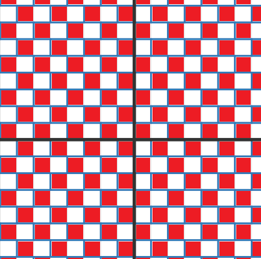
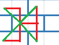
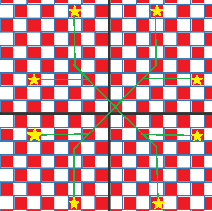

A問題
入力されてくる文字列を1行づつ、"Takahashi"だった回数をカウントするだけの優しい問題です。
foldを使って入力された文字列をすべて走査し、一致したときだけ結果を+1します。
文字列の読み込み方法はproconioでStringの配列として読み込むと簡単です。
input! {
n:i32,
strings:[String;n],
}
そして、数え上げにはイテレーターのfold関数を使うと簡単に記述できます。
fold関数に渡したクロージャの引数sが"Takahashi"ならカウンタを+1して返すだけです。
fold関数は数え上げなどで使えるので覚えておきましょう
let result = strings.iter().fold(0,|num,s|{
if *s == String::from("Takahashi") {
return num + 1;
}
return num;
}
);
println!("{}",result);
そして、これをつなげると最終的に以下の提出コードになります。
use proconio::input;
fn main(){
input! {
n:i32,
strings:[String;n],
}
let result = strings.iter().fold(0,|num,s|{
if *s == String::from("Takahashi") {
return num + 1;
}
return num;
});
println!("{}",result);
}
B問題
1行目に色の種類の数と、2列目に並んでいる人の服の色がスペース区切りで格納されています。
入力処理はA問題のモノを流用しても大丈夫そうです。
問題文によると、2列目の中で同じ色に挟まれている合計人数を出力すればいいようです。
この問題ではA問題のようにfoldを使うことができませんのでforループを使って配列を走査します。
入力の配列をSとして、S[n]とS[n+2]が一致したときカウンタをインクリメントすればよいです。
ただし、配列の添え字を+2する部分があるため領域外アクセスによるpanicに注意が必要です。
以下答案です。
fn main() {
input! {
n:i32,
people:[i32;n*2],
}
let mut count = 0;
for position in 0..(people.len() - 2) {
if people[position] == people[position + 2] {
count = count + 1;
}
}
println!("{}", count);
}
C問題
問題文から一見最短経路問題に見えますが、これにつられてダイクストラ法などのメモ化をすると、問題の制限が大きすぎるため保存容量が爆発的に増大してしまいます。
問題文の数式から、特に0.5などの数字は不要で碁盤目状になっているとみなすことができ、そこに互い違いにタイルが敷き詰められています。
まず問題を簡単にするために、タイルの左側に始点と終点を寄せる処理が必要なので、まず以下の図をご覧ください。

これは、左にパネルの境界があるマスを赤く塗りましたが、市松模様になっていることから、x+yが奇数の場合左に1マス移動させる処理でよさそうです。
もちろんこれはタイルを跨ぎませんのでコストには全く影響しません。
そして、タイルが互い違いに敷き詰められていることから、以下の図のように赤い線を辿ることで、盤面のいずれの地点でも斜め上、斜め下への移動はコスト1となります。

このことから、問題文の条件を緩和して斜め移動を許可してしまいます。
斜め移動が効率的なので、目的地から各軸に平行な直線と交わる場所まで斜め移動してから残りは軸に平行に移動すればいい事が分かります。

この時、目的値までの移動パターンは上記の8パターンの何れかとなるので、まずは斜め移動しつつ目的地とx座標またはy座標の何れかが一致する場所まで移動します。
最後の軸に平行な移動がx軸方向なら距離の1/2がコストとなり、y軸方向なら距離がそのままコストとなります。
そのため斜め移動コストと軸方向の移動コストを合計することで、最小コストが求まるというわけです。
この間の計算でループは必要なさそうなので、実行時間は一瞬になるのではないかと予想されます。
現状、筆者は最後の数式を求める時点で時間切れとなり、提出することができていないためコード例は載せていません。